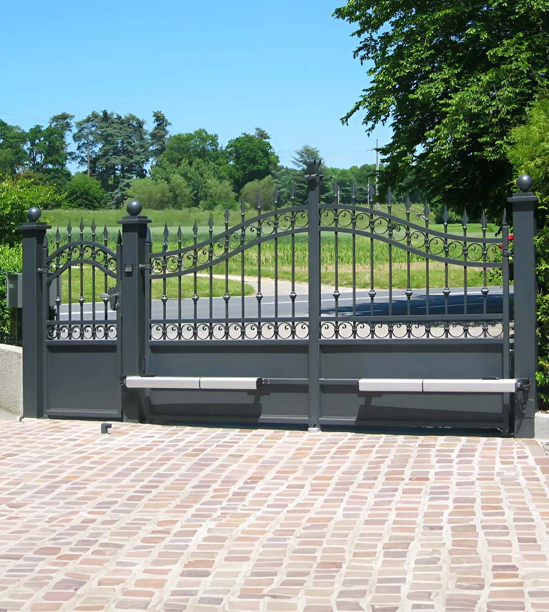
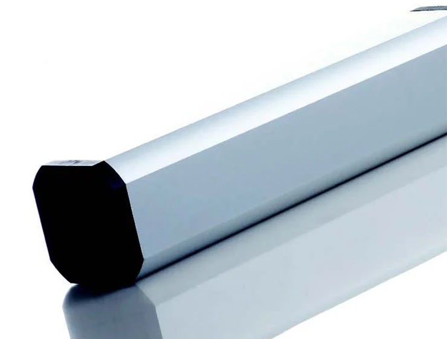
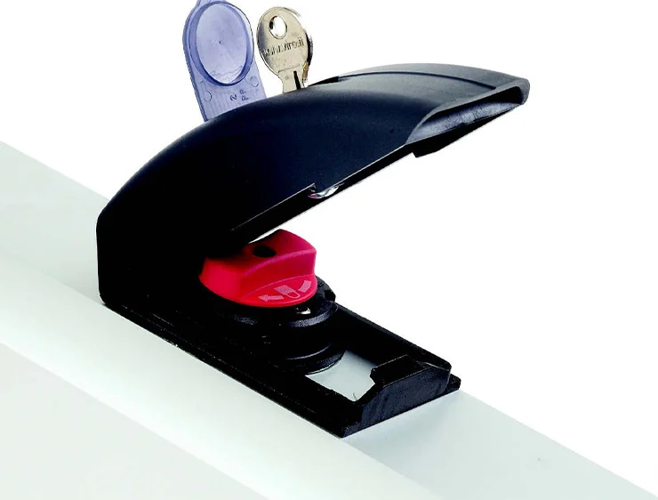
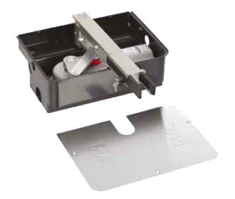
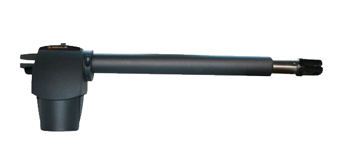
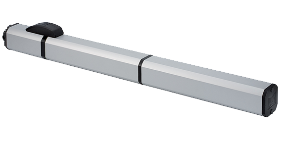

Motor hidráulico para hojas de hasta 7 m a 110v.
El dispositivo de desbloqueo protegido con llave garantiza un control completo de tu portón.
El FAAC 400 tiene un movimiento extremadamente silencioso, que te permite abrir y cerrar tu portón con discreción.
Gracias al bloqueo hidráulico, disponible en las versiones CBC y CBAC, tu portón resistirá intentos de intrusión.
También puedes elegir la versión irreversible en apertura CBAC, con bloqueo en apertura y cierre, o la versión reversible SB o SBS (sin bloqueo - sin bloqueo lento).


La tecnología oleodinámica se caracteriza por una altísima fiabilidad y gran resistencia, ya que todos los componentes tienen una lubricación y un enfriamiento constantes.
El uso del aceite garantiza un movimiento fluido y muy silencioso en cualquier condición climática y a temperaturas entre –20°C y +55°C, con poco mantenimiento y bajo consumo de energía eléctrica.

El FAAC 400 está disponible en 6 versiones para adaptarse a una amplia gama de aplicaciones según la velocidad y potencia deseadas.
Además de las versiones CBC (con bloqueo en cierre), CBAC (con bloqueo en apertura y cierre), SB (sin bloqueo) y SBS (sin bloqueo lento), el FAAC 400 también está disponible en una versión especial “larga”, pensada para pilares de gran tamaño (CBAC L y SBS L).
Info técnicas

Motor electromecánico para hojas de hasta 3,5 m y 500 kg a 24V.

Motor electromecánico para hojas de hasta 4 m a 110V y 24V.

Motor hidraulico para hojas hasta 4mts y 800kg a 24v.

Motor hidraulico para hojas hasta 3mts a 24v.